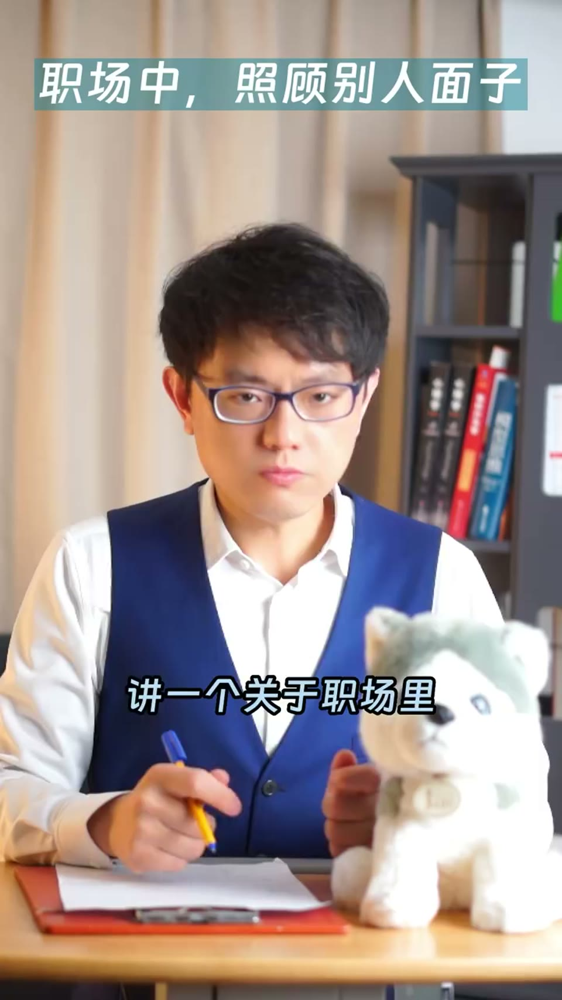
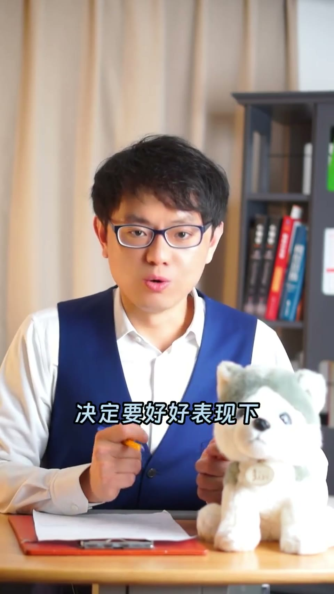
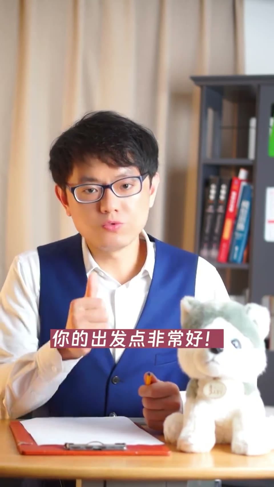

01
中文
老板发现你在客户开发方面比所有销售同事都厉害，有一天让你给大家讲一讲怎么拜访客户。
EN
The boss noticed you're the best at client development, so one day he asked you to teach the whole sales team how to make sales calls.
表达提示客户开发：client development；拜访客户：make sales calls

Scene English · 视频学习
Saving Face When Training Colleagues
🎧 语音讲解
The awkward training session
情境老板发现你客户开发比所有销售同事都厉害，让你给全队讲怎么拜访客户。结果台下没人配合，你不停说「不对、不是」，坐在最后的杨若实冷眼记录你讲的每一句话。
老板发现你在客户开发方面比所有销售同事都厉害，有一天让你给大家讲一讲怎么拜访客户。
The boss noticed you're the best at client development, so one day he asked you to teach the whole sales team how to make sales calls.
表达提示客户开发：client development；拜访客户：make sales calls
培训上课时你发现，坐在下面的销售同事都很「菜」，你提的问题没人回答。
When the training started, you realized the sales reps in front of you were total rookies — no one answered your questions.
表达提示很菜：total rookies；提问题：ask / pose a question
你很郁闷，不停地重复「不对、不是、但是、可是」，坐在最后的杨若实一边听你讲课，一边用冷峻又无奈的目光记录你讲的每一句话。
Frustrated, you kept repeating "no, that's not right, but, however," while Yang Ruoshi, sitting in the back, watched with a cold and helpless look and wrote down every word you said.
表达提示郁闷：frustrated / fed up；冷峻又无奈的目光：a cold and helpless look
老板赏识 → 委以培训重任
台下不配合 → 越纠正越尴尬

Principle: encourage adults, don't negate
情境老板课后反馈：成年人学习不能被否定，要以鼓励为主。你不是学校老师，面对的是抬头不见低头见的成年人，否定会让彼此面子上难看。上课的真正目标是建立信任、让人愿意跟你干。
我来给你反馈：成年人学习，不应该也不能够被否定，应该是以鼓励为主。
Here's my feedback: adults should never — and can never — be put down when they're learning. It's all about encouragement.
表达提示反馈：feedback；否定：put down / negate；以鼓励为主：it's all about encouragement
学校里的老师面对的是未成年人，批评学生、指出他们的错误无可厚非；但你面对的是成年人，大家抬头不见低头见，面子上难看。
School teachers deal with minors, so criticizing students and pointing out their mistakes is perfectly fair. But you're dealing with adults — you bump into each other in the office every day, and calling them out would make them lose face.
表达提示未成年人：minors；无可厚非：perfectly fair / understandable；丢面子：lose face
哪怕他们没有掌握你讲的内容，但只要听完课愿意相信你、跟着你干，那你的课就是成功的。
Even if they don't master a thing you taught, as long as they walk away trusting you and willing to follow you, your class is a success.
表达提示掌握：master；跟着你干：follow you / work with you
成年人学习 → 鼓励为主而非否定
上课目的 → 不是灌输内容而是建立信任

The trick: find the bright spot first
情境有人问：学员真的错了又不能否定，怎么办？讲者给出第一个办法：找出回答中值得肯定的点先表扬，再补充改进建议——先找亮点再补充，是锦上添花而非否定批评；另外两招留到付费课程。
学员如果真的错了，你又不能否定人家，那应该怎么办呢？
So what if a trainee is genuinely wrong, and you can't just shoot them down?
表达提示否定人家：shoot someone down；学员：trainee
第一个办法：找出学员回答中值得肯定的点，比如「你的出发点非常好，你考虑到了A、B、C三点」。
Method one: find something in their answer worth praising — for example, "your thinking is spot on, and you've covered points A, B, and C."
表达提示值得肯定的点：something worth praising；出发点：your thinking / your intention
然后再补充——如果能有几点改进，那结果就更完美了。先找亮点再补充，你是帮人家锦上添花，而不是否定批评。
Then add your suggestions: "with a few tweaks, it would be even better." Find the bright spot first, then build on it — you're icing the cake, not raining on their parade.
表达提示先找亮点再补充：lead with the bright spot, then add on；锦上添花：icing on the cake
三个办法 → 视频只揭晓第一个
先找亮点再补充 → 先肯定后建议
表达「照顾面子」
说「成年人以鼓励为主」
说「先找亮点再补充」
表达「锦上添花」
「照顾面子」用 save face；give face 虽偶见，但 save face 是最标准表达。
「否定/驳倒别人」→ shoot down 更口语地道。
「很菜」= 菜鸟 → rookie / greenhorn，别字面译成 vegetable。
锦上添花 → icing on the cake 是地道固定表达。